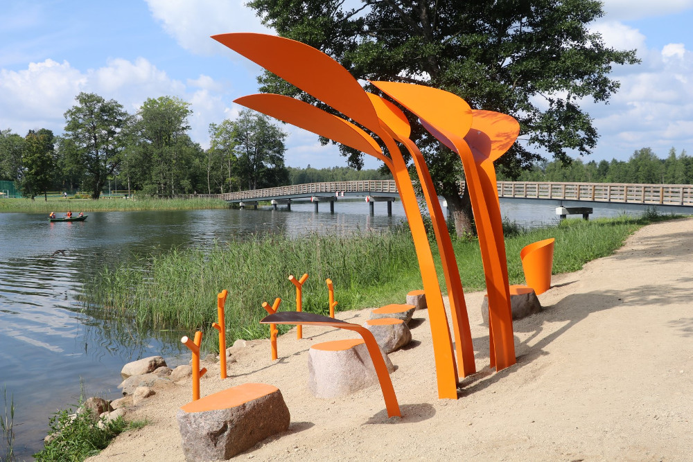

Alūksnes ezera krastā tapušas mūsdienīgas makšķerēšanas vietas
Alūksnes novada pašvaldība ar Latvijas vides aizsardzības fonda atbalstu Alūksnes ezera krastā gar Tempļakalna ielu labiekārtojusi jaunas makšķerēšanas vietas, vēsta pašvaldība. Projektu izstrādājusi SIA “Alūksnes projekti”, bet makšķerēšanas vietu unikālo dizainu izveidojis dizaina birojs SIA “H2E”. Saskaņā ar iepirkuma procedūras rezultātiem darbus veica SIA “AD production”.